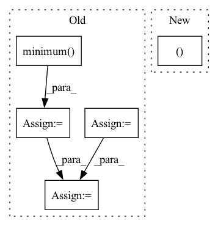

Pattern ID :11629

Before Change
def calc_qparams(self):
qmin, qmax = self.qdesc.qrange
min_val, max_val = self.calc_minmax()
min_val_neg = torch.minimum(min_val, torch.zeros_like(min_val))
max_val_pos = torch.maximum(max_val, torch.zeros_like(max_val))
device = min_val_neg.device
scale = torch.ones(min_val_neg.size(), dtype=torch.float32, device=device)
zero_point = torch.zeros(min_val_neg.size(), dtype=torch.float32, device=device)
if self.is_symmetric:
max_val_pos = torch.maximum(-min_val_neg, max_val_pos)
scale = max_val_pos * 2 / float(qmax - qmin)
scale = torch.maximum(scale, torch.tensor(1e-6))
else:
scale = (max_val_pos - min_val_neg) / float(qmax - qmin)
scale = torch.maximum(scale, torch.tensor(1e-6))
zero_point = torch.round(-min_val_neg / scale)
assert len(self._data_cache) == 0, "free data cache after calc_qparams"
return scale, zero_point
After Change
def calc_qparams(self):
min_val, max_val = self.calc_minmax()
scale, zero_point = self.calc_qparams_with_minmax(min_val, max_val)
return scale, zero_point
def calc_qparams_with_minmax(self, min_val, max_val):
In pattern: SUPERPATTERN
Frequency: 3
Non-data size: 5
Instances
Fragment ID: 39333467
Project Name: megvii-research/sparsebit
Commit Name: 9d1342a85c4f6eeb7fa1517bf5843055628895b3
Time: 2022-08-17
Author: 37740540+PeiqinSun@users.noreply.github.com
File Name: sparsebit/quantization/observers/base.py
M Class Name: Observer
N Class Name: Observer
M Method Name: calc_qparams(1)
N Method Name: calc_qparams(1)
M Parent Class: nn.Module
N Parent Class: nn.Module
M File Name: sparsebit/quantization/observers/base.py
N File Name: sparsebit/quantization/observers/base.py
M Start Line: 17
M End Line: 32
N Start Line: 18
N End Line: 18
'>
Before Change
def __iou_loss__(self, bboxes_trues, bboxes_pred_top_left, bboxes_pred_bottom_right, bboxes_pred_hw):
// bboxes_trues: [[top, left, bottom, right]]
inter_top_left = tf.maximum(bboxes_trues[:, :2], bboxes_pred_top_left)
inter_bottom_right = tf.minimum(bboxes_trues[:, 2:], bboxes_pred_bottom_right)
inter_hw = tf.maximum(inter_bottom_right - inter_top_left, 0)
inter_area = inter_hw[:, 0] * inter_hw[:, 1]
bboxes_trues_area = (bboxes_trues[:, 2] - bboxes_trues[:, 0]) * (bboxes_trues[:, 3] - bboxes_trues[:, 1])
bboxes_preds_area = bboxes_pred_hw[:, 0] * bboxes_pred_hw[:, 1]
union_area = bboxes_trues_area + bboxes_preds_area - inter_area
iou = inter_area / (union_area + self.epsilon)
return 1 - iou ** 2
After Change
// bboxes_preds_area = pred_hw[:, 0] * pred_hw[:, 1]
// union_area = bboxes_trues_area + bboxes_preds_area - inter_area
// iou = inter_area / (union_area + self.epsilon)
true_top_left, true_bottom_right = bboxes_trues[:, :2], bboxes_trues[:, 2:4]
true_hw = true_bottom_right - true_top_left
iou = __bbox_iou__(true_top_left, true_bottom_right, true_hw, pred_top_left, pred_bottom_right, pred_hw, epsilon=self.epsilon)
return 1 - iou ** 2
'>
Fragment ID: 39333520
Project Name: leondgarse/keras_cv_attention_models
Commit Name: df3cf1ce0ac4b02a9c73496b1a583b9a892c7b0a
Time: 2022-03-25
Author: leondgarse@gmail.com
File Name: keras_cv_attention_models/coco/losses.py
M Class Name: AnchorFreeLoss
N Class Name: AnchorFreeLoss
M Method Name: __iou_loss__(5)
N Method Name: __iou_loss__(5)
M Parent Class: tf.keras.losses.Loss
N Parent Class: tf.keras.losses.Loss
M File Name: keras_cv_attention_models/coco/losses.py
N File Name: keras_cv_attention_models/coco/losses.py
M Start Line: 152
M End Line: 160
N Start Line: 189
N End Line: 191
'>
Before Change
if accepted:
factor = torch.minimum(torch.full_like(new_factor, self.max_factor), new_factor)
if prev_rejected:
factor = torch.minimum(torch.ones_like(factor), factor)
not_t1_achieved = torch.logical_not(t1_achieved)
h[not_t1_achieved] *= factor[not_t1_achieved]
else:
factor = torch.maximum(torch.full_like(new_factor, self.min_factor), new_factor)
After Change
prev_rejected = not accepted
rk_state = (fnew, tnew, ynew, h)
return rk_state, t1_achieved
class RK23(RKAdaptiveStepSolver):
error_estimator_order = 2
'>
Fragment ID: 39333316
Project Name: xitorch/xitorch
Commit Name: d91c4d6e56fb40b9f91fda53f69871e97dcb6abe
Time: 2021-12-30
Author: firman.kasim@gmail.com
File Name: xitorch/_impls/integrate/ivp/adaptive_rk.py
M Class Name: RKAdaptiveStepSolver
N Class Name: RKAdaptiveStepSolver
M Method Name: _single_step(3)
N Method Name: _single_step(3)
M Parent Class: object
N Parent Class: object
M File Name: xitorch/_impls/integrate/ivp/adaptive_rk.py
N File Name: xitorch/_impls/integrate/ivp/adaptive_rk.py
M Start Line: 125
M End Line: 165
N Start Line: 85
N End Line: 122